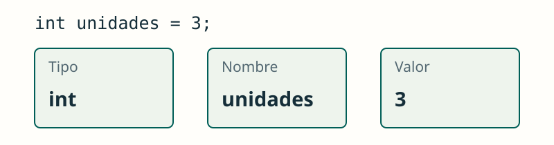

Tipos de datos, variables y constantes
JAVA / FUNDAMENTOS
Guardar información
Cada dato tiene un tipo; cada variable tiene un nombre y un valor.
El nombre identifica el dato; el tipo limita los valores que podemos guardar. Elegimos ambos según el problema que queremos resolver.
int guarda enteros; double, decimales; boolean, true o false; char, un carácter. String guarda texto y no es un tipo primitivo.
int unidades = 3;
double precio = 2.5;
boolean disponible = true;
char talla = 'M';
String nombre = "Alex";
JAVA / FUNDAMENTOS
Elegir un tipo
El tipo expresa qué información guardamos.
Un precio puede tener parte decimal. double es suficiente para estos ejercicios iniciales; las cantidades monetarias exactas requieren otro tratamiento.
Ver la explicación
double permite representar valores con parte decimal; int guarda enteros.
double precio = 2.5;JAVA / FUNDAMENTOS
Asignar un nuevo valor
Una asignación sustituye el valor anterior.
Lee las asignaciones en orden: primero guardamos 3 y después lo sustituimos por 5. El tipo de la variable sigue siendo int.
Ver la explicación
La segunda asignación guarda 5. No suma al valor anterior.
int unidades = 3;
unidades = 5;
System.out.println(unidades);JAVA / FUNDAMENTOS
Una constante
final impide volver a asignar la variable.
final permite dar nombre a un valor que no debe reasignarse. Así evitamos repetir números cuyo significado no queda claro.
Ver la explicación
No compila: IVA ya tiene su valor y es final.
final double IVA = 0.21;
IVA = 0.10;JAVA / FUNDAMENTOS
El bloque marca el alcance
Una variable local solo es accesible dentro de su bloque, después de declararla.
Las llaves delimitan un bloque. Una variable declarada dentro solo puede usarse desde su declaración hasta el final de ese bloque.
Ver la explicación
puntos se declaró en el bloque interior y no se puede usar fuera.
{
int puntos = 5;
}
System.out.println(puntos);PRUEBA Y OBSERVA
Una variable que cambia
Asigna un valor y observa qué guarda la variable. Asignar sustituye; incrementar suma una unidad.
Distingue dos acciones: asignar cambia el valor guardado; incrementar calcula el valor anterior más uno. La salida permite seguir ese cambio.
Simulación didáctica de las operaciones mostradas; no ejecuta código Java.